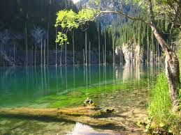
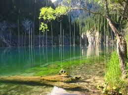

Менің туған жерім
Тарихы, табиғаты, мәдениеті мен тұлғалары
Тарихы, табиғаты, мәдениеті мен тұлғалары
Туған жерімнің тарихы терең тамырлы. Бұл аймақ ежелден түрлі өркениеттердің тоғысқан жері, Ұлы Жібек жолының бойындағы маңызды орталықтардың бірі болған. Әр кезеңде өз ізін қалдырған мәдениет пен өркениет бүгінгі күнге дейін сақталған.
Табиғаты ерекше әсем: биік таулар, жасыл жайлаулар, мөлдір өзендер мен кең байтақ даласы бар. Жазда қып-қызыл қызғалдақ басқан дала, қыста ақ қарға оранған таулар көркіне көрік қосады.
 

Қазақ халқының мәдениеті – туған жердің рухани қазынасы. Ән-күй, жыр-дастан, ұлттық ойындар мен салт-дәстүрлер ұрпақтан ұрпаққа жалғасып келеді. Әрбір мереке мен той халықты біріктіріп, елдің бірлігін нығайтады.